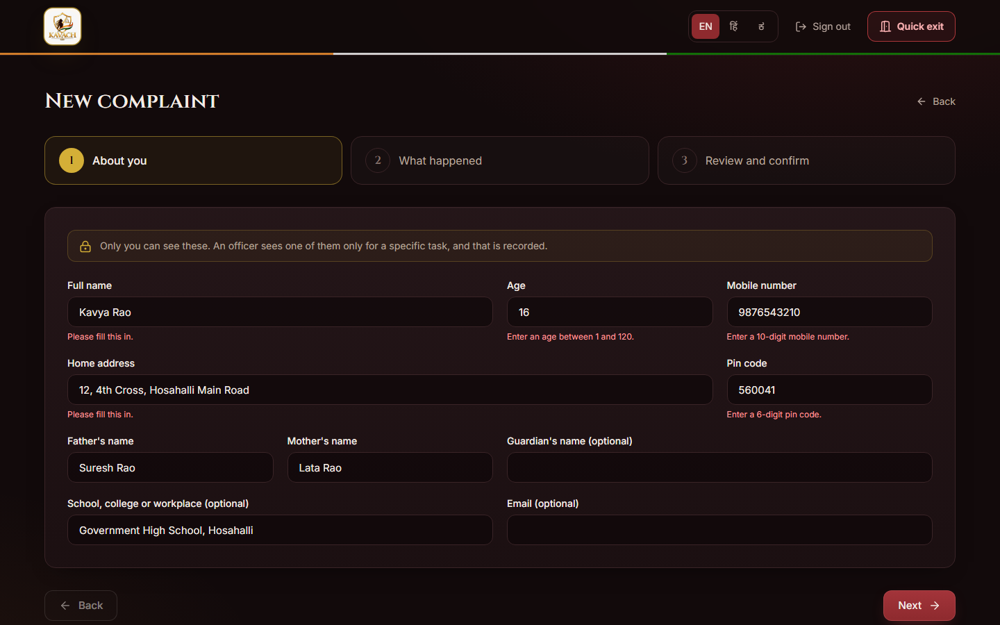
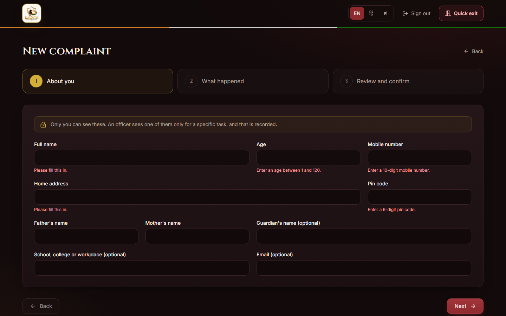
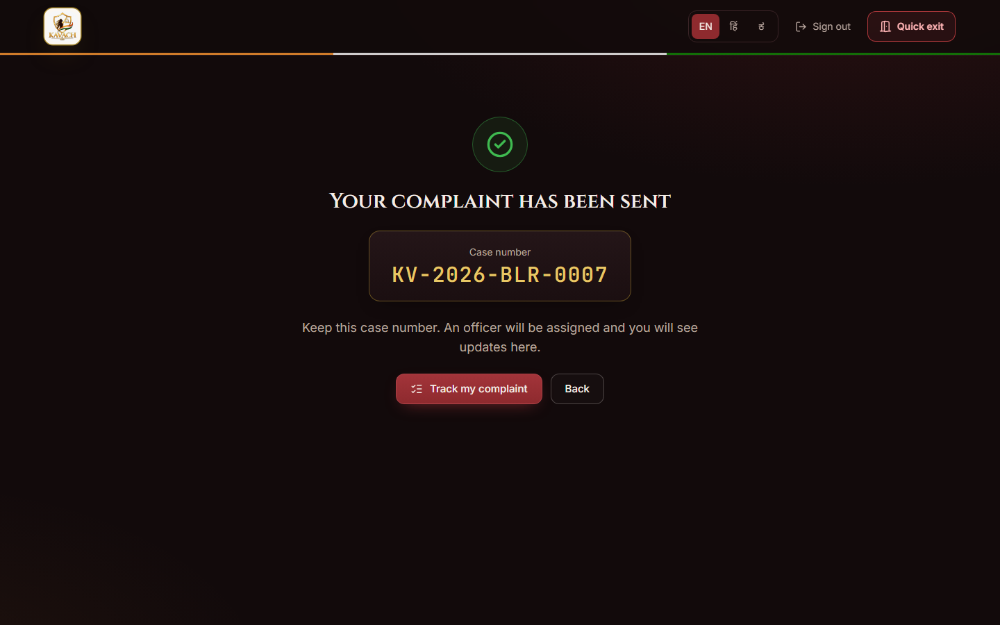
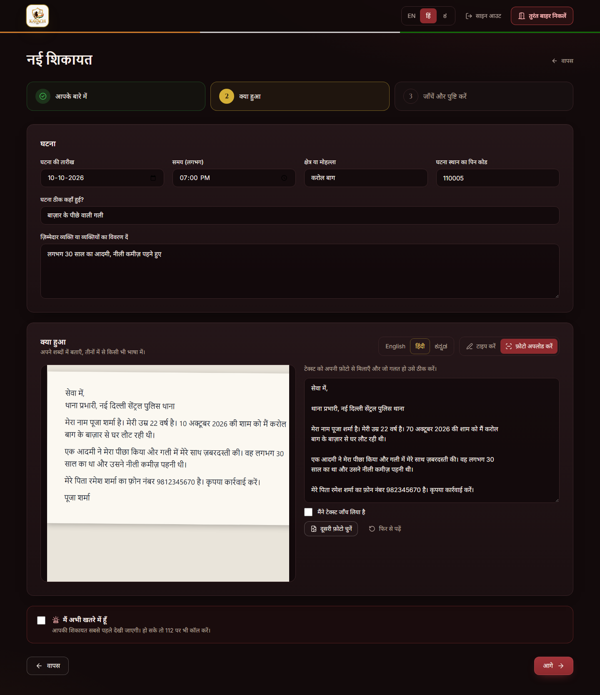
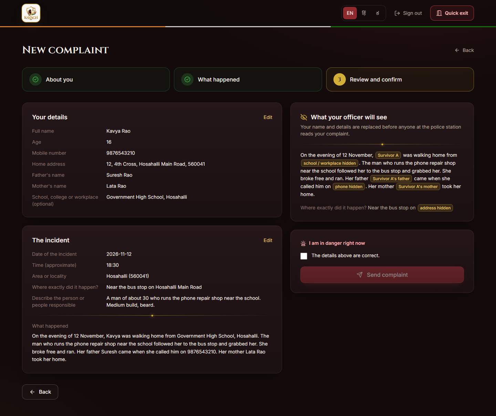
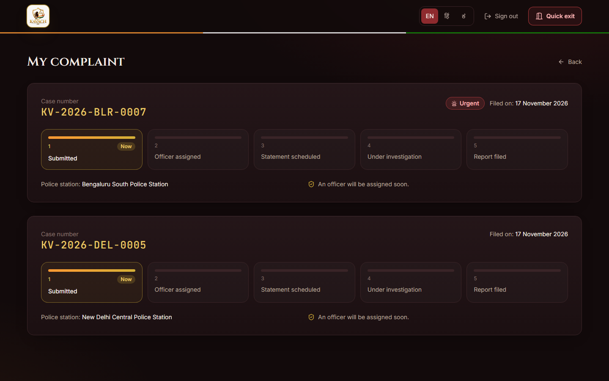
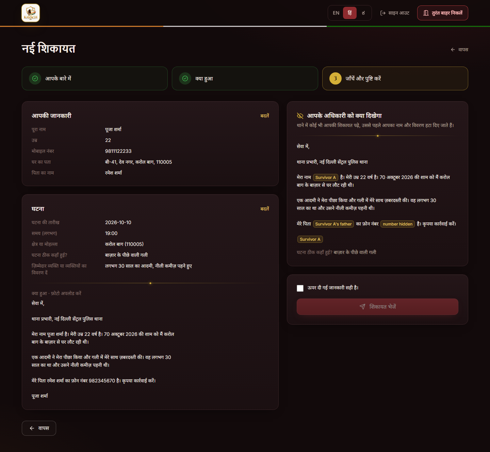
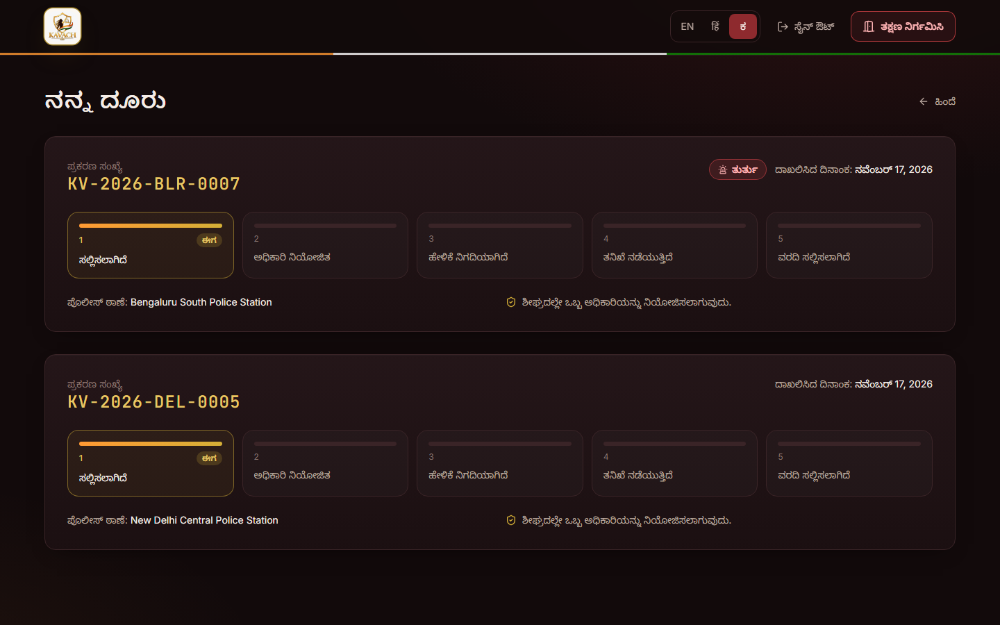

A survivor can now file a complaint in three steps, either by typing it or by uploading a photo of a written page that is read in her browser. Before she sends it, she sees exactly what her officer will read, with her name, family, school and numbers replaced. Two complaints were filed end to end: a typed one in English and a scanned one in Hindi.
The three steps
1. About you



2. What happened: typed or photographed

3. Review and confirm

Tracker



What police get, and what stays sealed
| She typed | Police text shows | The original |
|---|---|---|
| Name, alias, any part of it ("Kavya") | Survivor A | Sealed in the vault, each value encrypted on its own |
| Father's, mother's, guardian's name | Survivor A's father / mother / guardian | |
| School, college or workplace, or part of it | school / workplace hidden | |
| Home address, or a part of it such as the street | address hidden | |
| Her phone, email, pin code | phone / email / pin code hidden | |
| Any other phone number, Aadhaar-style ID, or long number | phone / ID number / number hidden | |
| Age | "Minor (under 18)" or "Adult" only | Sealed |
| Narrative, place and accused description as written, OCR text, photo | The tokenised versions above | Sealed (photo encrypted as a file) |
The case also records the area ("Hosahalli, Bengaluru"), the station chosen from the incident pin code, the category (child victim if under 18), language, source, and the urgent flag. Case numbers follow the station: KV-2026-BLR-0007, KV-2026-DEL-0005. They skip past the hidden decoy numbers, so decoys sit among real cases.
Found and fixed during testing
OCR dropped a digit from a phone number. In the Hindi test page, OCR read the father's 10-digit number as 9 digits. That no longer looked like a phone number, so it would have reached police in the clear if she had not corrected it.
Fix: any run of 8 or more digits is now hidden as "number hidden". Dates such as 2026-11-12 and case numbers stay readable. The test was re-run on a fresh database, and the fragment is now hidden.
Checks run
| Check | Result | Status |
|---|---|---|
| Typed English complaint, filed through the real form in headless Chrome | Case KV-2026-BLR-0007, child victim, urgent, Bengaluru South | Pass |
| Hindi photo complaint: upload, OCR, check, review, send | Case KV-2026-DEL-0005, Hindi, from a scan, New Delhi Central | Pass |
| Hindi OCR accuracy on the synthetic page | Near word-perfect; 2 digit errors that the survivor can correct | Noted |
| "What your officer will see" preview | Name, father, mother, school, phone, address and the garbled number all replaced | Pass |
| Another survivor asks for this case by number | "Not found" (the API does not confirm it exists) | Pass |
| Survivor asks for a decoy case by number | "Not found" | Pass |
| Empty or invalid form (bad pin code, short narrative) | Blocked with messages in her language; the API also rejects them | Pass |
| Database file searched for 9 names, numbers and address parts from both complaints | None found | Pass |
| Scan stored encrypted; audit entries contain no personal data; hash chain | Scan sealed (86 KB); entries list source, language, station only; chain intact | Pass |
Not done yet, and limits
- No officer is assigned yet; cases wait at "Submitted" until Phase 4's allocation.
- Kannada OCR is wired in but was not tested end to end in this phase; English and Hindi typed text and Hindi OCR were.
- Handwriting was not tested. Tesseract is weak on handwriting, so printed or very neat pages work best.
- OCR runs in the browser, but the OCR engine and language data are downloaded from a public CDN each time (nothing is cached on her phone). This needs internet; the photo itself is never uploaded for reading.
- No translation: the officer will see the complaint in the language she wrote it in.
- Name matching is exact-text: a nickname or a different spelling she did not type in the form is not caught at intake. Phase 5's redaction engine adds broader detection before any public copy.
Next: Phase 4, allocation and police side
Route each case to an on-duty woman officer at the right station with the fewest open cases, then build the officer's case list and case sheet showing "Survivor A", masked calls, time-boxed reveal requests with a watermark, submit-and-seal, and the supervisor's allocation and approval screens.